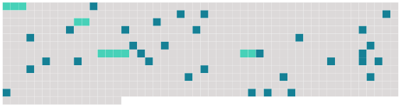

Longueur nb maillons : 36 mentions |
 |
[Le capitaine Blair] produit des actions réelles quand il faut, [il] monte sans y penser jusqu'à une espèce de sublime professionnel, sans se dire que le moment est venu d'être sublime. [1 phrases] [Blair] commande. [Il] lutte contre les sautes de vent, l'arrivée des grains, les courants, se méfie des lignes de récifs. [Il] va régulièrement d'incident en incident sans aucune complaisance pour [lui -même] , sans aucune idée lyrique des océans. [Il] connaît qu'il arrive des moments où il ne faut pas se tourner les pouces, mais décider et ordonner parce que tout dépend de la vitesse et de la sûreté d'un petit nombre de mouvements. [Il] est beau à voir : on [l'] imagine criant au directeur et au propriétaire de [sa] compagnie, comme le patron de la Tempête « Silence, vous autres!! [1 phrases] » Quand [son] bateau est neuf comme l'Amin, [Blair] apprend à connaître un objet : savoir comment les pompes à mazout fonctionnent, comment cette carcasse obéit aux tours du gouvernail à Vapeur, comment elle se comporte à la lame.
[Il] écoute les bruits du navire comme un cœur, jusqu'à le connaître comme une femme, jusqu'à s'en dégoûter comme d'une vieille épouse. [Il] est complet quand [il] fait un métier d'homme qui a des ennemis dans les cartes, les couleurs des fonds, les directions colorées des eaux. Alors [il] a autant de corps que l'équipage a d'unités. Il faut voir aussi [un contremaître de chaudronnerie] commandant [son] équipe devant la presse à emboutir les grosses pièces, ou encore [un chirurgien] [qui] opère. [1 phrases] [Blair] est ainsi, vivant tout le temps que dure [son] acte : mais [il] n'en sait qu'un, c'est [son] malheur. Le reste du temps, il n'y a pas tous les jours des tempêtes, des ports difficiles, [il] s'emmerde, [il] regarde [son] cargo comme une cellule, [il] n'arrive pas à se consoler en traitant la mer de putain. Les sentiments de la mer le secoueraient de [son] rire écossais : c'est une matière instable difficile à traiter, dure à comprendre, c'est un mauvais cheval. [1 phrases] [Blair] ne descend même pas à terre pour contempler les paysages : [il] a fait vingt-cinq ou trente fois escale à Massaouah et [il] ne cherche pas à savoir que c'est la plus belle baie du monde avec son cirque de montagnes, ses eaux jaunes et plates qui traînent des rivières de sable jaune, des amas d'herbes comme l'Amazone, et les débris de cet arbre que j'appelle le Flamboyant.
[Il] sait seulement que la navigation n'est pas commode : son action est dirigée là où elle possède tout son efficace. Tous ces marins se morfondent à périr, [Blair] , [qui] pense à [ses] enfants morts, Beaton, Hiddleston l'ingénieur qui ne rêve que d'un embarquement sur un paquebot, comme un fonctionnaire veut monter d'une classe. |
 |
La ressource peut être téléchargée sur la page Ortolang
Si vous avez des questions ou vous voyez des erreurs, merci d'envoyer un mail à silvia.federzoni89@gmail.com
Site développé par S. Federzoni (contact)